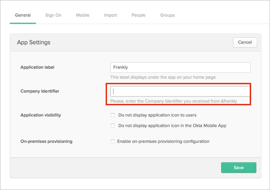
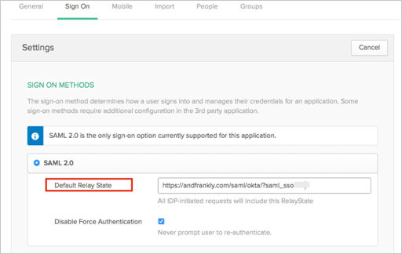

Send an email to &frankly and request that they enable SAML 2.0 for your account.
Provide the following information:
IDP Issuer/Entity ID: Copy and paste the following:
Sign into the Okta Admin Dashboard to generate this variable.
x.509 Certificate: Copy and paste the following in PEM text format:
Sign into the Okta Admin Dashboard to generate this variable.
Login URL/SignOn URL: Copy and paste the following:
Sign into the Okta Admin Dashboard to generate this variable.
&frankly will notify you when SAML is enabled and will provide you with a Company Identifier.
After &frankly has enabled SAML for you, in Okta, select the General tab for the &frankly app, then select Edit.
Enter the Company Identifier provided by &frankly, then click Save.

Still in Okta, select the Sign On tab for the &frankly app, then select Edit.
Enter the following into the Default Relay State field, then click Save.
https://andfrankly.com/saml/okta/?saml_sso=[Company Identifier]

Done!
Notes:
SP-initiated flows, IdP-initiated flows, and Just In Time (JIT) provisioning are all supported.